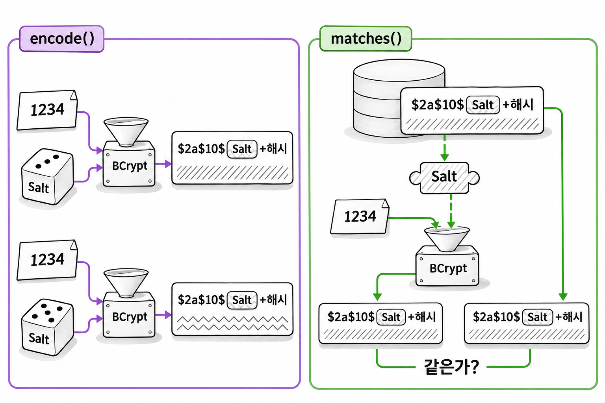
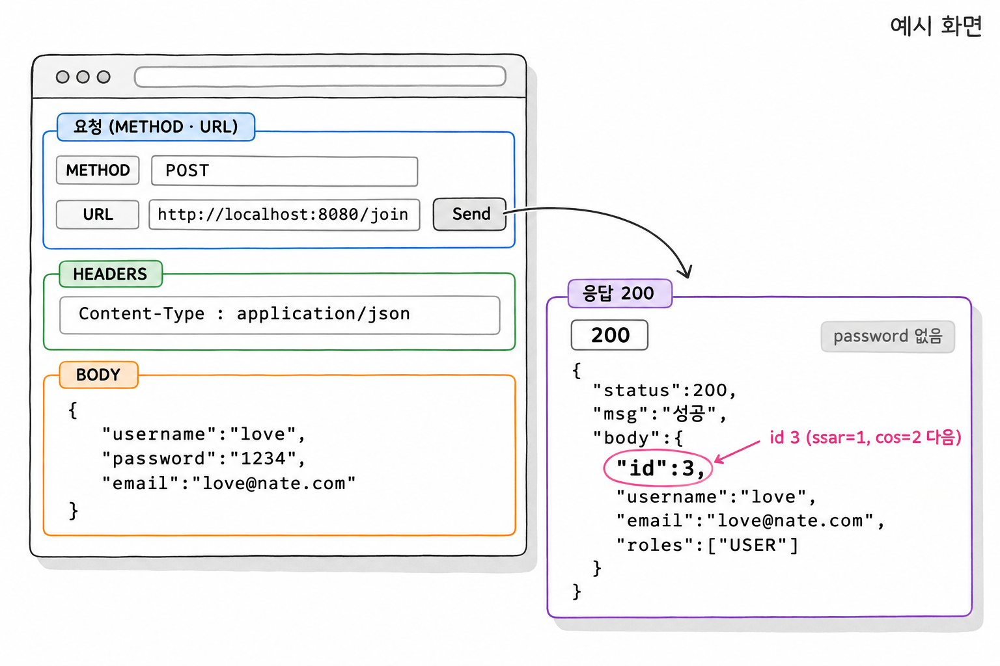
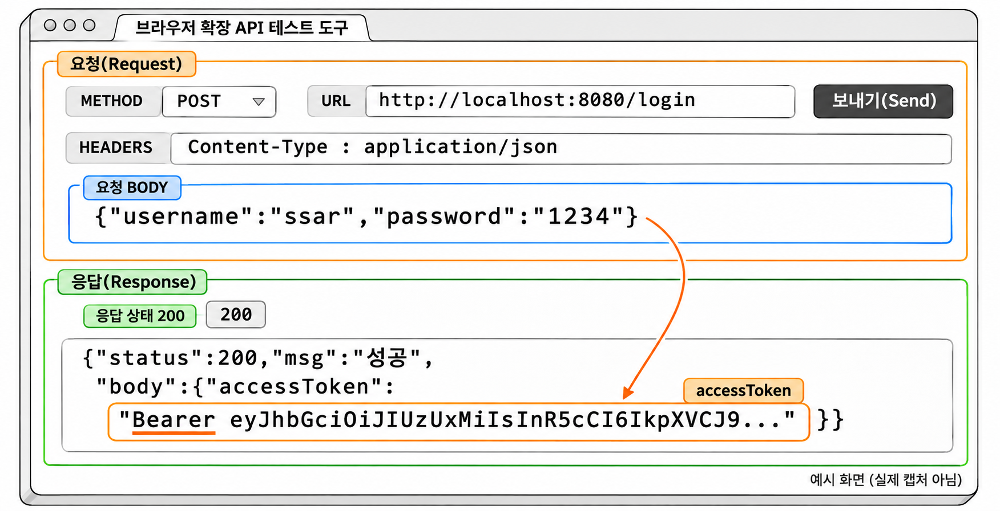
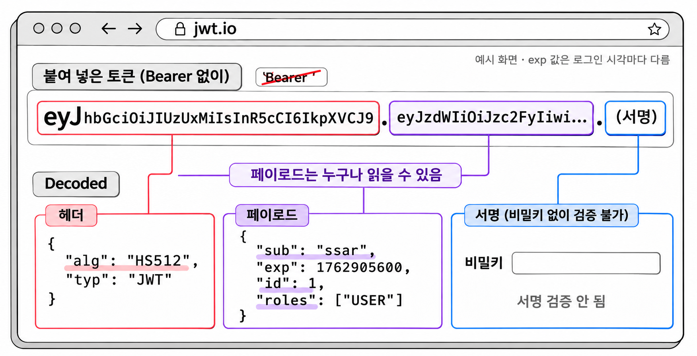
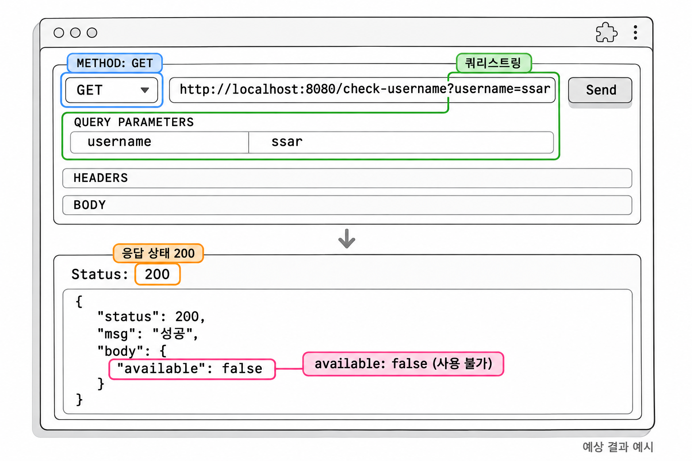

7장. 회원 API 만들기
회원 API의 요청은 컨트롤러, 서비스, 리포지토리 순서로 지나갑니다. 컨트롤러는 요청을 받아 응답을 돌려줍니다. 서비스는 가입과 로그인 규칙을 처리하고, 리포지토리는 DB에 접근합니다. 이 장에서는 DB에 가까운 리포지토리부터 만들어 컨트롤러까지 올라갑니다.
| 계층 | 클래스 | 하는 일 |
|---|---|---|
| 컨트롤러 | AuthController | 요청 받기, Resp로 응답하기 |
| 서비스 | UserService | 중복 확인, 비밀번호 암호화, 토큰 발급 |
| 리포지토리 | UserRepository | user_tb 조회 · 저장 |
6장에서 /join, /login, /check-username을 permitAll()로 열어 두었습니다. 그래서 이 장의 API는 토큰 없이 요청할 수 있습니다.
1. UserRepository
UserRepository는 User 엔티티를 저장하고 조회하는 인터페이스입니다. JpaRepository를 상속하면 save(), findById() 같은 기본 메서드가 따라옵니다. 여기에 아이디로 회원을 찾는 메서드와 아이디가 있는지 확인하는 메서드를 더합니다.
예제 7-1 — UserRepository 만들기
이어서: 예제 6-7
파일명: src/main/java/com/newtenco/blog/user/UserRepository.java
package com.newtenco.blog.user;
import org.springframework.data.jpa.repository.JpaRepository;
import java.util.Optional;
public interface UserRepository extends JpaRepository<User, Integer> {
// select ... from user_tb where username = ?
Optional<User> findByUsername(String username);
// username 이 있으면 true, 없으면 false
boolean existsByUsername(String username);
}두 메서드에는 구현 코드가 없습니다. 스프링 데이터 JPA가 findBy, existsBy 뒤에 붙은 필드 이름을 읽고 쿼리를 만들어 주기 때문입니다. 이 쿼리는 서버가 시작될 때 만들어집니다. 그래서 findByUsernam처럼 필드 이름에 오타가 있으면 서버가 아예 시작되지 않습니다.
| 메서드 | 결과 |
|---|---|
findByUsername("ssar") | 회원이 있으면 User가 담긴 Optional, 없으면 빈 Optional |
existsByUsername("ssar") | 회원이 있으면 true, 없으면 false |
findByUsername()은 Optional을 돌려줍니다. 그래서 서비스 코드를 작성할 때 회원이 없는 경우를 빠뜨리기 어렵습니다. 5절의 로그인이 바로 이 경우를 처리합니다.
2. 요청 · 응답 DTO
2.1 record로 DTO 만들기
DTO(Data Transfer Object)는 계층 사이에서 데이터를 옮기는 객체입니다. 클라이언트가 보낸 JSON은 요청 DTO에 담기고, 응답 DTO는 JSON으로 바뀌어 클라이언트에 나갑니다. 엔티티를 그대로 주고받지 않는 이유는 2.3에서 설명합니다.
DTO는 4장의 Resp처럼 record로 만듭니다. 값은 dto.username()처럼 필드 이름과 같은 접근자로 꺼냅니다. record의 필드는 모두 final이라 한 번 만든 DTO의 값은 바뀌지 않습니다. 요청 값을 계층 사이로 옮기기만 하는 DTO에는 이 성질이 잘 맞습니다.
이 프로젝트는 요청 DTO를 AuthRequest 클래스 안에, 응답 DTO를 AuthResponse 클래스 안에 모읍니다. 쓸 때는 AuthRequest.JoinDTO처럼 바깥 클래스 이름을 붙입니다. 이름만 봐도 요청용인지 응답용인지 알 수 있습니다.
2.2 JoinDTO 검증 어노테이션
요청 DTO의 필드에 검증 어노테이션을 붙이면 컨트롤러의 @Valid가 그 규칙으로 값을 검사합니다. 검사에 실패하면 4장의 전역 예외 처리기가 400 응답을 만듭니다.
예제 7-2 — 요청 DTO 만들기
이어서: 예제 7-1
파일명: src/main/java/com/newtenco/blog/auth/AuthRequest.java
package com.newtenco.blog.auth;
import com.newtenco.blog.user.User;
import jakarta.validation.constraints.Email;
import jakarta.validation.constraints.NotBlank;
import jakarta.validation.constraints.Size;
import java.util.List;
public class AuthRequest {
public record JoinDTO(
@NotBlank(message = "유저네임을 입력해주세요")
@Size(min = 4, max = 20, message = "유저네임은 4~20자여야 합니다")
String username,
@NotBlank(message = "비밀번호를 입력해주세요")
@Size(min = 4, max = 20, message = "비밀번호는 4~20자여야 합니다")
String password,
@NotBlank(message = "이메일을 입력해주세요")
@Email(message = "이메일 형식이 올바르지 않습니다")
@Size(max = 30, message = "이메일은 30자 이하여야 합니다")
String email) {
// DTO -> Entity 변환 (비밀번호는 암호화된 값을 받는다)
public User toEntity(String encPassword) {
return User.builder()
.username(username)
.password(encPassword)
.email(email)
.roles(List.of("USER"))
.build();
}
}
public record LoginDTO(
@NotBlank(message = "유저네임을 입력해주세요") String username,
@NotBlank(message = "비밀번호를 입력해주세요") String password) {
}
}| 검증 어노테이션 | 실패하는 값 |
|---|---|
@NotBlank | null, 빈 문자열 "", 공백만 있는 문자열 " " |
@Size(min, max) | 길이가 min보다 짧거나 max보다 긴 문자열(min을 생략하면 최대 길이만 검사) |
@Email | 이메일 형식이 아닌 문자열 |
username의 @Size(max = 20)과 email의 @Size(max = 30)은 2장 User 엔티티의 컬럼 길이 20, 30에 맞춘 값입니다. 이 검증이 없으면 21자 아이디나 31자 이메일은 DB에 저장할 때 오류가 납니다. 이 오류는 전역 예외 처리기를 거쳐 500 응답이 됩니다. 클라이언트가 잘못 보낸 값이므로 컨트롤러 입구에서 400으로 막는 편이 맞습니다.
DTO의 password는 사용자가 입력한 원래 비밀번호입니다. 이 값이 엔티티에 그대로 들어가면 안 되므로 toEntity()는 암호화한 비밀번호를 매개변수로 따로 받습니다. 원래 비밀번호를 엔티티에 넣는 실수를 메서드의 매개변수 구성으로 막는 셈입니다. 가입한 회원은 모두 USER 역할을 받고, ADMIN은 더미 데이터의 cos만 가집니다.
LoginDTO는 5절의 로그인에서 씁니다. 로그인할 때는 값이 비어 있는지만 검사합니다. 길이 규칙을 응답으로 알려 주면 공격자에게 힌트가 됩니다. 또 로그인 성공 여부는 어차피 DB에 저장된 값과 비교해야 정해집니다.
2.3 응답 DTO에서 비밀번호 빼기
컨트롤러가 User 엔티티를 그대로 돌려주면 스프링이 JSON 변환에 쓰는 Jackson은 getter가 있는 필드를 모두 JSON으로 바꿉니다. 이때 password 필드의 암호화된 비밀번호도 응답에 실립니다. 암호화된 값이라도 밖에 나가면 오프라인 대입 공격의 재료가 됩니다. 공격자가 해시를 가져가 자기 컴퓨터에서 비밀번호 후보를 하나씩 넣어 볼 수 있기 때문입니다. 그래서 응답에는 클라이언트에 필요한 필드만 골라 담은 DTO를 씁니다.
예제 7-3 — 응답 DTO 만들기
이어서: 예제 7-2
파일명: src/main/java/com/newtenco/blog/auth/AuthResponse.java
package com.newtenco.blog.auth;
import com.newtenco.blog.user.User;
import java.util.List;
public class AuthResponse {
// 회원 정보 응답 (비밀번호는 넣지 않는다)
public record DTO(Integer id, String username, String email, List<String> roles) {
public DTO(User user) {
this(user.getId(), user.getUsername(), user.getEmail(), List.copyOf(user.getRoles()));
}
}
// 로그인 성공 시 토큰 응답
public record TokenDTO(String accessToken) {
}
// 유저네임 사용 가능 여부 응답
public record AvailableDTO(boolean available) {
}
}DTO의 필드 목록에는 password가 없습니다. 필드가 없으니 응답 JSON에도 비밀번호가 실리지 않습니다. User를 받는 생성자는 엔티티에서 필요한 값만 꺼내 record의 표준 생성자 this(...)에 넘깁니다.
권한 목록은 List.copyOf()로 복사해 담았습니다. user.getRoles()는 JPA가 관리하는 엔티티의 컬렉션입니다. 이 컬렉션을 그대로 담으면 트랜잭션이 끝난 뒤 JSON으로 바꿀 때 JPA가 관리하는 컬렉션에 접근하게 됩니다. 복사해 두면 응답 DTO는 엔티티와 상관없는 일반 목록을 갖습니다.
TokenDTO는 5절의 로그인에서, AvailableDTO는 6절의 중복체크에서 씁니다.
3. BCrypt 비밀번호 암호화
3.1 PasswordEncoder와 BCrypt
PasswordEncoder는 스프링 시큐리티가 비밀번호를 암호화하고 비교할 때 쓰는 인터페이스입니다. 6장의 SecurityConfig에서 이 빈을 미리 등록해 두었습니다.
코드 조각
// SecurityConfig 안 (6장에서 등록)
@Bean
public PasswordEncoder passwordEncoder() {
return new BCryptPasswordEncoder();
}반환 타입은 인터페이스 PasswordEncoder이고, 실제 객체는 BCrypt로 구현한 BCryptPasswordEncoder입니다. 서비스는 인터페이스 타입으로 주입받습니다. 그래서 나중에 암호화 방식을 바꾸더라도 이 메서드 한 곳만 고치면 됩니다.
BCrypt는 비밀번호를 저장하려고 만든 해시 함수입니다. 해시(hash)는 입력값을 정해진 규칙으로 바꾼 결과입니다. 해시 결과에서 원래 값을 거꾸로 알아낼 수는 없습니다. 그래서 DB가 유출되어도 원래 비밀번호가 바로 드러나지 않습니다. BCrypt는 계산을 일부러 느리게 만듭니다. 공격자가 비밀번호 후보를 하나씩 대입해 볼 때 시간이 오래 걸리게 하려는 설계입니다.
PasswordEncoder에서 이 장이 쓰는 메서드는 두 개입니다.
| 메서드 | 쓰는 곳 | 하는 일 |
|---|---|---|
encode(원래비밀번호) | 회원가입 | 비밀번호를 BCrypt 해시로 바꿉니다 |
matches(원래비밀번호, 저장된해시) | 로그인 | 입력한 비밀번호가 저장된 해시와 맞는지 확인합니다 |
3.2 Salt와 encode() · matches()
BCrypt는 해시를 만들 때마다 무작위 값인 Salt를 섞습니다. 그래서 같은 "1234"를 두 번 encode()해도 결과가 매번 다릅니다. Salt가 없으면 같은 비밀번호를 쓰는 회원들의 해시가 똑같아집니다. 공격자는 흔한 비밀번호의 해시를 미리 계산한 표로 그 회원들의 비밀번호를 한꺼번에 알아낼 수 있습니다.
encode("1234")를 한 번 실행하면 $2a$10$eiDus5jn3LsNyfjng4/HxukQh.7EZmn1ZNL1g4s3kkqPYpwY5DiuO 같은 값이 나옵니다. BCrypt 해시의 길이는 항상 60자입니다. 2장에서 password 컬럼 길이를 60으로 잡은 것도 이 때문입니다. 이 문자열은 네 부분으로 나뉩니다.
| 부분 | 값 | 뜻 |
|---|---|---|
$2a$ | 2a | BCrypt 버전 |
10$ | 10 | 비용(cost). 2의 10제곱 번 반복해 계산합니다 |
| 다음 22자 | eiDus5jn3LsNyfjng4/Hxu | Salt |
| 나머지 31자 | kQh.7EZmn1ZNL1g4s3kkqPYpwY5DiuO | 해시 결과 |

Salt는 해시 문자열 안에 함께 저장됩니다. 그림 7-1처럼 matches()는 저장된 해시에서 Salt와 비용을 꺼냅니다. 그 값으로 입력 비밀번호를 다시 해시한 뒤 저장된 해시와 비교합니다.
로그인할 때 encode(입력값).equals(저장된해시)로 비교하면 안 됩니다. encode()는 매번 새 Salt를 쓰므로 비밀번호가 맞아도 저장된 해시와 다른 값을 돌려줍니다.
2장 data.sql에 넣은 ssar과 cos의 비밀번호도 "1234"를 BCrypt로 해시한 값입니다. 5절에서 1234로 로그인하면 matches()가 true를 돌려줍니다.
4. 회원가입 API
4.1 UserService의 회원가입
회원가입 메서드는 아이디 중복을 확인하고, 비밀번호를 암호화해 저장한 뒤, 비밀번호를 뺀 응답 DTO를 돌려줍니다.
예제 7-4 — 회원가입 서비스 만들기
이어서: 예제 7-3
파일명: src/main/java/com/newtenco/blog/user/UserService.java
package com.newtenco.blog.user;
import com.newtenco.blog.auth.AuthRequest;
import com.newtenco.blog.auth.AuthResponse;
import com.newtenco.blog.core.handler.errors.BadRequestException;
import lombok.RequiredArgsConstructor;
import org.springframework.security.crypto.password.PasswordEncoder;
import org.springframework.stereotype.Service;
import org.springframework.transaction.annotation.Transactional;
@Transactional(readOnly = true)
@RequiredArgsConstructor
@Service
public class UserService {
private final UserRepository userRepository;
private final PasswordEncoder passwordEncoder;
@Transactional
public AuthResponse.DTO 회원가입(AuthRequest.JoinDTO reqDTO) {
if (userRepository.existsByUsername(reqDTO.username())) {
throw new BadRequestException("이미 존재하는 유저네임입니다");
}
String encPassword = passwordEncoder.encode(reqDTO.password());
User savedUser = userRepository.save(reqDTO.toEntity(encPassword));
return new AuthResponse.DTO(savedUser);
}
}| 순서 | 코드 | 하는 일 |
|---|---|---|
| 1 | existsByUsername() | 아이디가 이미 있으면 BadRequestException(400)을 던집니다 |
| 2 | passwordEncoder.encode() | 비밀번호를 BCrypt 해시로 바꿉니다 |
| 3 | reqDTO.toEntity(encPassword) | 해시한 비밀번호로 User 엔티티를 만듭니다 |
| 4 | userRepository.save() | user_tb와 user_role_tb에 저장합니다 |
| 5 | new AuthResponse.DTO(savedUser) | 비밀번호를 뺀 응답 DTO로 바꿉니다 |
1번의 BadRequestException은 4장의 전역 예외 처리기가 받아 400 Resp 응답으로 바꿉니다. 서비스는 응답 모양을 신경 쓰지 않고 예외만 던집니다.
클래스에는 @Transactional(readOnly = true)를 붙였습니다. 데이터를 바꾸는 회원가입()에만 @Transactional을 다시 붙였습니다. 메서드에 붙인 설정이 클래스 설정보다 우선합니다. 앞으로 추가할 조회 메서드는 클래스 설정대로 읽기 전용 트랜잭션에서 실행됩니다. 읽기 전용 트랜잭션에서는 JPA가 변경 감지(엔티티 값이 바뀌었는지 확인하는 작업)를 건너뛰므로 조금 가볍게 동작합니다.
스프링은 @RequiredArgsConstructor가 만든 생성자로 PasswordEncoder를 주입합니다. 3.1에서 본 SecurityConfig의 빈이 이 자리에 들어옵니다.
4.2 AuthController의 /join
AuthController는 JSON 요청을 JoinDTO로 받아 검증하고, 서비스가 돌려준 결과를 Resp.ok()로 감싸 응답합니다.
예제 7-5 — 회원가입 컨트롤러 만들기
이어서: 예제 7-4
파일명: src/main/java/com/newtenco/blog/auth/AuthController.java
package com.newtenco.blog.auth;
import com.newtenco.blog.core.util.Resp;
import com.newtenco.blog.user.UserService;
import jakarta.validation.Valid;
import lombok.RequiredArgsConstructor;
import org.springframework.http.ResponseEntity;
import org.springframework.web.bind.annotation.PostMapping;
import org.springframework.web.bind.annotation.RequestBody;
import org.springframework.web.bind.annotation.RestController;
@RequiredArgsConstructor
@RestController
public class AuthController {
private final UserService userService;
@PostMapping("/join")
public ResponseEntity<?> join(@Valid @RequestBody AuthRequest.JoinDTO reqDTO) {
return Resp.ok(userService.회원가입(reqDTO));
}
}@RequestBody는 요청 본문의 JSON을 JoinDTO로 바꿉니다. JSON의 키 이름과 record의 필드 이름이 같아야 값이 들어갑니다. @Valid는 만들어진 DTO를 검증 어노테이션의 규칙대로 검사합니다. 검사에 실패하면 컨트롤러 메서드는 실행되지 않고 MethodArgumentNotValidException이 발생합니다. 4장의 전역 예외 처리기가 이 예외를 "필드명:메시지" 모양의 400 응답으로 바꿉니다.
주소는 일부러 /api/로 시작하지 않게 했습니다. 6장의 접근 규칙에서 /api/**는 인증이 필요한 주소로 묶었습니다. 회원가입, 로그인, 중복체크는 아직 토큰이 없는 사람이 쓰는 기능이라 /api/** 바깥에 둡니다.
4.3 Talend API Tester로 회원가입 요청하기
서버를 실행하고 크롬에서 Talend API Tester를 엽니다. 요청 칸에는 다음 값을 넣습니다.
| 칸 | 값 |
|---|---|
| METHOD | POST |
| URL | http://localhost:8080/join |
| HEADERS | Content-Type : application/json |
| BODY | 아래 JSON |
코드 조각
{"username":"love","password":"1234","email":"love@nate.com"}Content-Type 헤더가 빠지면 스프링은 본문을 JSON으로 읽지 않습니다. 이 경우 @RequestBody 변환에 실패해 415 응답이 돌아옵니다.
실행 결과
Send를 누르면 응답 상태 200과 다음 본문이 표시됩니다.
{"status":200,"msg":"성공","body":{"id":3,"username":"love","email":"love@nate.com","roles":["USER"]}}data.sql의 ssar과 cos가 id 1, 2를 쓰고 있어서 새 회원은 id 3을 받습니다. 응답 본문에 password가 없다는 점도 확인합니다.

생성형 예시 · 실제 실행 안 함
같은 요청을 한 번 더 보내거나 값을 바꿔 보내면 실패 응답을 볼 수 있습니다.
| 요청 본문 | 응답 상태 | 응답 본문 |
|---|---|---|
| love 회원을 다시 보냄 | 400 | {"status":400,"msg":"이미 존재하는 유저네임입니다","body":null} |
"username":"ab" | 400 | {"status":400,"msg":"username:유저네임은 4~20자여야 합니다","body":null} |
"email":"love" | 400 | {"status":400,"msg":"email:이메일 형식이 올바르지 않습니다","body":null} |
첫 번째 행은 서비스가 던진 BadRequestException에서 나온 응답입니다. 나머지 두 행은 @Valid 검증에 실패해 나온 응답입니다. 원인은 달라도 클라이언트는 같은 Resp 모양으로 받습니다.
H2 콘솔에서 SELECT * FROM user_tb;를 실행하면 love 회원의 password 칸에서 $2a$10$으로 시작하는 60자 해시를 볼 수 있습니다. H2가 메모리 모드라서 서버를 다시 시작하면 love 회원은 사라집니다.
5. 로그인 API와 JWT 발급
5.1 아이디 없음과 비밀번호 틀림을 같은 401로 응답하기
로그인 메서드는 아이디로 회원을 찾고 matches()로 비밀번호를 비교합니다. 둘 다 통과하면 3장의 JwtUtil.create()로 토큰을 만들어 돌려줍니다.
예제 7-6 — 로그인 API 만들기
이어서: 예제 7-5
파일명: src/main/java/com/newtenco/blog/user/UserService.java
package com.newtenco.blog.user;
import com.newtenco.blog.auth.AuthRequest;
import com.newtenco.blog.auth.AuthResponse;
import com.newtenco.blog.core.handler.errors.BadRequestException;
import com.newtenco.blog.core.handler.errors.UnauthorizedException;
import com.newtenco.blog.core.util.JwtUtil;
import lombok.RequiredArgsConstructor;
import org.springframework.security.crypto.password.PasswordEncoder;
import org.springframework.stereotype.Service;
import org.springframework.transaction.annotation.Transactional;
@Transactional(readOnly = true)
@RequiredArgsConstructor
@Service
public class UserService {
private final UserRepository userRepository;
private final PasswordEncoder passwordEncoder;
@Transactional
public AuthResponse.DTO 회원가입(AuthRequest.JoinDTO reqDTO) {
if (userRepository.existsByUsername(reqDTO.username())) {
throw new BadRequestException("이미 존재하는 유저네임입니다");
}
String encPassword = passwordEncoder.encode(reqDTO.password());
User savedUser = userRepository.save(reqDTO.toEntity(encPassword));
return new AuthResponse.DTO(savedUser);
}
public AuthResponse.TokenDTO 로그인(AuthRequest.LoginDTO reqDTO) {
// 아이디가 틀렸는지 비밀번호가 틀렸는지 알려주지 않는다
User user = userRepository.findByUsername(reqDTO.username())
.orElseThrow(() -> new UnauthorizedException("유저네임 혹은 비밀번호가 일치하지 않습니다"));
if (!passwordEncoder.matches(reqDTO.password(), user.getPassword())) {
throw new UnauthorizedException("유저네임 혹은 비밀번호가 일치하지 않습니다");
}
return new AuthResponse.TokenDTO(JwtUtil.create(user));
}
}파일명: src/main/java/com/newtenco/blog/auth/AuthController.java
package com.newtenco.blog.auth;
import com.newtenco.blog.core.util.Resp;
import com.newtenco.blog.user.UserService;
import jakarta.validation.Valid;
import lombok.RequiredArgsConstructor;
import org.springframework.http.ResponseEntity;
import org.springframework.web.bind.annotation.PostMapping;
import org.springframework.web.bind.annotation.RequestBody;
import org.springframework.web.bind.annotation.RestController;
@RequiredArgsConstructor
@RestController
public class AuthController {
private final UserService userService;
@PostMapping("/join")
public ResponseEntity<?> join(@Valid @RequestBody AuthRequest.JoinDTO reqDTO) {
return Resp.ok(userService.회원가입(reqDTO));
}
@PostMapping("/login")
public ResponseEntity<?> login(@Valid @RequestBody AuthRequest.LoginDTO reqDTO) {
return Resp.ok(userService.로그인(reqDTO));
}
}로그인은 두 곳에서 실패합니다. 아이디가 없으면 orElseThrow()에서, 비밀번호가 틀리면 matches() 검사에서 예외를 던집니다. 두 곳 모두 같은 UnauthorizedException에 같은 메시지를 씁니다.
메시지를 "없는 아이디입니다"와 "비밀번호가 틀렸습니다"로 나누면 사용자는 편합니다. 하지만 그 정보는 공격자에게도 그대로 전달됩니다. 공격자는 아무 아이디나 넣어 보며 가입된 아이디를 골라냅니다. 그다음 찾은 아이디에만 비밀번호를 대입하면 됩니다. 응답을 하나로 맞추면 공격자는 무엇이 틀렸는지 알 수 없습니다.
상태 코드는 401입니다. 로그인 실패는 누구인지 확인하지 못한 상황이라 5장에서 본 인증 실패에 해당합니다. 403은 누구인지는 알지만 권한이 없을 때 씁니다.
로그인()에는 @Transactional을 따로 붙이지 않았습니다. 회원을 조회하기만 하므로 클래스의 읽기 전용 트랜잭션으로 충분합니다.
JwtUtil.create()는 앞에 "Bearer "를 붙인 문자열을 돌려줍니다. 클라이언트는 받은 값을 그대로 Authorization 헤더에 넣으면 됩니다.
5.2 Talend API Tester로 토큰 받기
회원가입과 같은 방법으로 요청하고 주소와 본문만 바꿉니다.
| 칸 | 값 |
|---|---|
| METHOD | POST |
| URL | http://localhost:8080/login |
| HEADERS | Content-Type : application/json |
| BODY | {"username":"ssar","password":"1234"} |
실행 결과
응답 상태 200과 함께 토큰이 담긴 본문이 표시됩니다. 토큰에 만료 시각이 들어가므로 토큰 값은 로그인할 때마다 달라집니다.
{"status":200,"msg":"성공","body":{"accessToken":"Bearer eyJhbGciOiJIUzUxMiIsInR5cCI6IkpXVCJ9..."}}
생성형 예시 · 실제 실행 안 함
accessToken 값 전체를 "Bearer "까지 포함해 메모장에 복사해 둡니다. 8장에서 이 값을 Authorization 헤더에 넣어 요청합니다.
비밀번호를 "5678"로 바꾸거나 아이디를 "nobody"로 바꿔 보내면 두 경우 모두 같은 응답이 돌아옵니다.
실행 결과
{"status":401,"msg":"유저네임 혹은 비밀번호가 일치하지 않습니다","body":null}두 응답은 한 글자도 다르지 않습니다. 클라이언트는 아이디와 비밀번호 가운데 어느 쪽이 틀렸는지 알 수 없습니다.
5.3 jwt.io에서 페이로드 확인하기
jwt.io는 JWT를 붙여 넣으면 헤더와 페이로드를 풀어 보여 주는 사이트입니다. 3장에서 페이로드는 Base64Url로 인코딩만 한 값이라 누구나 읽을 수 있다고 했습니다. 방금 받은 토큰으로 이 점을 직접 확인합니다.
복사한 값에서 앞의 Bearer (공백 포함 7글자)를 지우고 eyJ로 시작하는 부분만 붙여 넣습니다. Bearer 는 HTTP 헤더에서 토큰 종류를 알리는 접두사이고, JWT의 일부가 아닙니다. 접두사가 남아 있으면 jwt.io가 헤더 부분을 풀지 못합니다.
실행 결과
헤더와 페이로드 칸에 다음 내용이 표시됩니다. exp 값은 로그인한 시각에 따라 다릅니다.
{
"alg": "HS512",
"typ": "JWT"
}{
"sub": "ssar",
"exp": 1762905600,
"id": 1,
"roles": ["USER"]
}
생성형 예시 · 실제 실행 안 함
JwtUtil.create()에서 넣은 sub, exp, id, roles가 그대로 보입니다. 3장 코드에서 넣지 않은 iat는 없습니다. exp는 1970년 1월 1일부터 센 초 단위 시각입니다. 비밀키 없이도 누구나 이 내용을 읽을 수 있으므로 페이로드에는 비밀번호 같은 민감한 정보를 넣지 않습니다.
jwt.io에 비밀키를 넣지 않았으므로 jwt.io는 서명이 올바른지 검증하지 못합니다. 토큰을 읽는 일은 누구나 할 수 있습니다. 그러나 내용을 고친 토큰에 맞는 서명은 서버의 비밀키 없이 만들 수 없습니다. 위조한 토큰을 보내면 401 응답이 돌아오는데, 이 결과는 8장에서 확인합니다.
6. 유저네임 중복체크 API
6.1 쿼리스트링으로 값 받기
중복체크 API는 사용자가 가입 버튼을 누르기 전에 아이디를 쓸 수 있는지 미리 알려 줍니다. 값을 조회하기만 하므로 GET 요청을 씁니다. GET 요청에는 본문을 쓰지 않습니다. 그래서 아이디는 주소 뒤에 붙는 쿼리스트링(query string) ?username=값으로 보냅니다.
예제 7-7 — 유저네임 중복체크 API 만들기
이어서: 예제 7-6
파일명: src/main/java/com/newtenco/blog/user/UserService.java
package com.newtenco.blog.user;
import com.newtenco.blog.auth.AuthRequest;
import com.newtenco.blog.auth.AuthResponse;
import com.newtenco.blog.core.handler.errors.BadRequestException;
import com.newtenco.blog.core.handler.errors.UnauthorizedException;
import com.newtenco.blog.core.util.JwtUtil;
import lombok.RequiredArgsConstructor;
import org.springframework.security.crypto.password.PasswordEncoder;
import org.springframework.stereotype.Service;
import org.springframework.transaction.annotation.Transactional;
@Transactional(readOnly = true)
@RequiredArgsConstructor
@Service
public class UserService {
private final UserRepository userRepository;
private final PasswordEncoder passwordEncoder;
@Transactional
public AuthResponse.DTO 회원가입(AuthRequest.JoinDTO reqDTO) {
if (userRepository.existsByUsername(reqDTO.username())) {
throw new BadRequestException("이미 존재하는 유저네임입니다");
}
String encPassword = passwordEncoder.encode(reqDTO.password());
User savedUser = userRepository.save(reqDTO.toEntity(encPassword));
return new AuthResponse.DTO(savedUser);
}
public AuthResponse.TokenDTO 로그인(AuthRequest.LoginDTO reqDTO) {
// 아이디가 틀렸는지 비밀번호가 틀렸는지 알려주지 않는다
User user = userRepository.findByUsername(reqDTO.username())
.orElseThrow(() -> new UnauthorizedException("유저네임 혹은 비밀번호가 일치하지 않습니다"));
if (!passwordEncoder.matches(reqDTO.password(), user.getPassword())) {
throw new UnauthorizedException("유저네임 혹은 비밀번호가 일치하지 않습니다");
}
return new AuthResponse.TokenDTO(JwtUtil.create(user));
}
public AuthResponse.AvailableDTO 유저네임중복체크(String username) {
boolean available = !userRepository.existsByUsername(username);
return new AuthResponse.AvailableDTO(available);
}
}파일명: src/main/java/com/newtenco/blog/auth/AuthController.java
package com.newtenco.blog.auth;
import com.newtenco.blog.core.util.Resp;
import com.newtenco.blog.user.UserService;
import jakarta.validation.Valid;
import lombok.RequiredArgsConstructor;
import org.springframework.http.ResponseEntity;
import org.springframework.web.bind.annotation.GetMapping;
import org.springframework.web.bind.annotation.PostMapping;
import org.springframework.web.bind.annotation.RequestBody;
import org.springframework.web.bind.annotation.RequestParam;
import org.springframework.web.bind.annotation.RestController;
@RequiredArgsConstructor
@RestController
public class AuthController {
private final UserService userService;
@PostMapping("/join")
public ResponseEntity<?> join(@Valid @RequestBody AuthRequest.JoinDTO reqDTO) {
return Resp.ok(userService.회원가입(reqDTO));
}
@PostMapping("/login")
public ResponseEntity<?> login(@Valid @RequestBody AuthRequest.LoginDTO reqDTO) {
return Resp.ok(userService.로그인(reqDTO));
}
// GET /check-username?username=ssar
@GetMapping("/check-username")
public ResponseEntity<?> checkUsername(@RequestParam("username") String username) {
return Resp.ok(userService.유저네임중복체크(username));
}
}@RequestParam("username")은 쿼리스트링에서 username 키의 값을 꺼내 매개변수에 넣습니다. required 속성의 기본값이 true라서 주소에 ?username=이 아예 없으면 MissingServletRequestParameterException이 발생합니다. 4장의 전역 예외 처리기가 이 예외를 400 응답으로 바꿉니다.
서비스는 existsByUsername()의 결과를 뒤집어 돌려줍니다. 리포지토리는 아이디가 "있는가"를 묻지만, 클라이언트가 알고 싶은 것은 "쓸 수 있는가"이기 때문입니다.
| DB에 아이디가 | existsByUsername() | available |
|---|---|---|
| 있음 | true | false(사용 불가) |
| 없음 | false | true(사용 가능) |
중복체크를 통과해도 가입이 보장되지는 않습니다. 사용자가 아이디를 확인한 뒤 가입 버튼을 누르기 전에, 다른 사람이 같은 아이디로 먼저 가입할 수 있습니다. 그래서 4.1의 회원가입()에도 중복 검사를 그대로 남겨 둡니다. 중복체크 API는 사용자에게 결과를 미리 알려 주는 용도입니다.
6.2 Talend API Tester로 확인하기
METHOD를 GET으로 바꾸고 주소에 쿼리스트링을 붙여 보냅니다. GET 요청이므로 HEADERS와 BODY는 비워 둡니다.
코드 조각
http://localhost:8080/check-username?username=ssar실행 결과
{"status":200,"msg":"성공","body":{"available":false}}
생성형 예시 · 실제 실행 안 함
쿼리스트링 값을 바꿔 보내면 응답이 다음과 같이 달라집니다.
| 요청 주소 | 응답 상태 | 응답 본문 |
|---|---|---|
/check-username?username=ssar | 200 | {"status":200,"msg":"성공","body":{"available":false}} |
/check-username?username=newuser | 200 | {"status":200,"msg":"성공","body":{"available":true}} |
/check-username | 400 | {"status":400,"msg":"username:값을 입력해주세요","body":null} |
ssar은 data.sql로 넣어 둔 회원이라 쓸 수 없습니다. 4.3에서 가입한 love의 결과는 그 뒤에 서버를 다시 시작했는지에 따라 다릅니다. 다시 시작하지 않았다면 false가 나옵니다. 다시 시작했다면 메모리 DB에서 love 회원이 사라졌으므로 true가 나옵니다.